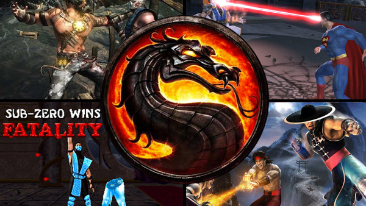

What is Mortal Kombat?
Mortal Kombat is a media franchise centered on a series of fighting video games originally developed by Midway Games in 1992. The original game spawned a franchise consisting of action-adventure games, a comic books series, a card game, films, an animated TV series and a live action tour.
The main story of Mortal Kombat is the realm of Outworld has defeated Earthrealm in nine of ten deathmatch tournaments called "Mortal Kombat", Intending to conquer it. There is a prophecy that is uncovered, stating that the "blood of Hanzo Hasashi" will unite a new generation of Earthrealm's champions to prevent Outworld's victory.